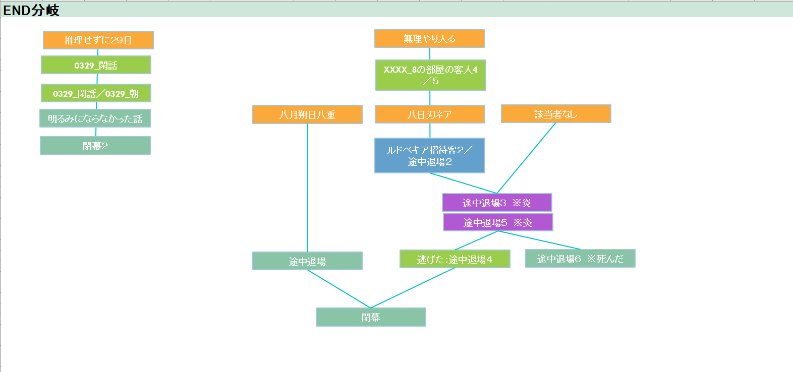
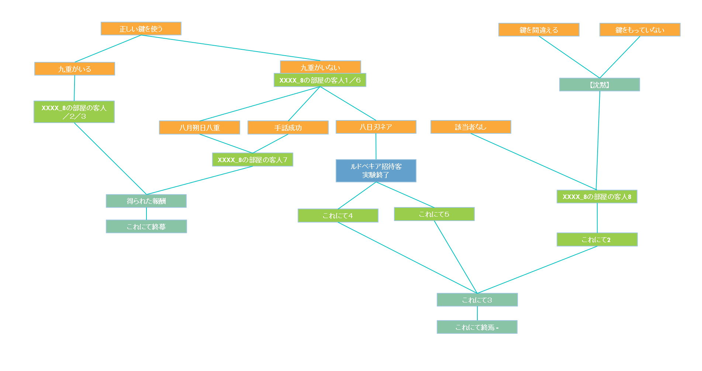

エンド
エンディングの分岐
エンド分岐１：２９日を迎える
→事実上の時間切れエンディング
エンド分岐２：真相を語らずに、隠し通路の先、3階への扉を開ける
※真相を語らず入ったことで８の招待客は自動的に死亡（探索者のルールを守らないペナルティ）エンド分岐２－１：８の招待客の名前を入れる
→無事にでて生還エンドエンド分岐２－２：主催者の名前を入れる
→主催者と少し話が可能。招待客の話を聞ける。そのあと、探索者のルールを守らないペナルティとして館の炎上。→エンド分岐３へ
エンド分岐２－３：該当者なし
→該当者いないため探索者のルールを守らないペナルティへ直行、館の炎上。→エンド分岐３へ
エンド分岐３：館の炎上
エンド分岐３－１：炎上した館から逃げれた。
→生還エンドエンド分岐３－２：炎上した館から逃げられなかった
→ロストエンドエンド分岐４：真相を語った
エンド分岐４－１：九重と一緒に正しい鍵を使用して、扉に入る
→生還エンド※すべての真相があっていれば（【砂時計のアイコン】未開示でベストエンド）
※謎解きを解いて８の招待客の名前が分かっていれば、トゥルーエンド
エンド分岐４－２：探索者だけで正しい鍵を使用して、扉に入る
→分岐５へエンド分岐４－３：扉を入る際に鍵を間違えた／鍵を持っていなかった
※８の招待客は自動的に死亡→生還エンド
エンド分岐５：真相を語り、謎解きに挑戦した
エンド分岐５－１：８の招待客の名前を入れる
→生還エンド ※トゥルーエンドエンド分岐５－２：主催者の名前を入れる
→主催者と少し話が可能。招待客の話を聞ける。→生還エンド
エンド分岐５－３：該当者なし
※８の招待客は自動的に死亡→生還エンド

